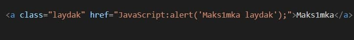
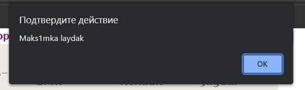

Гіперпосилання — фрагмент HTML-документу та один із базових його елементів. Гіперпосилання у HTML-документі може вказувати як на файл, що лежить у тій самій директорії на сервері, так і вміщати повний шлях URL до файлу, який розташований в Інтернеті. Також можна створювати гіперпосилання в середині одного документа, на електронну пошту, відео, аудіофайли та інші документи.
Приклад URL схеми в коді
Приклад реалізації URL схеми на HTML сторінці